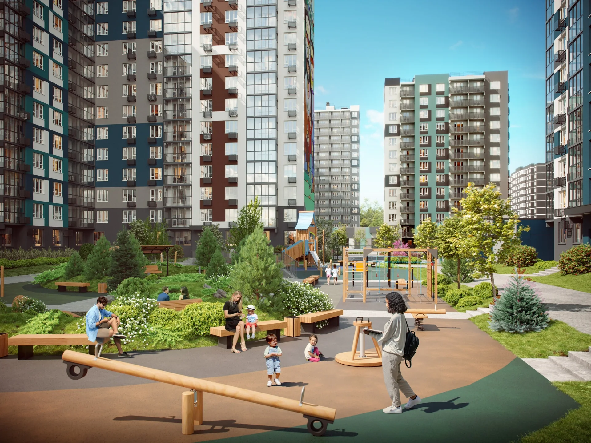
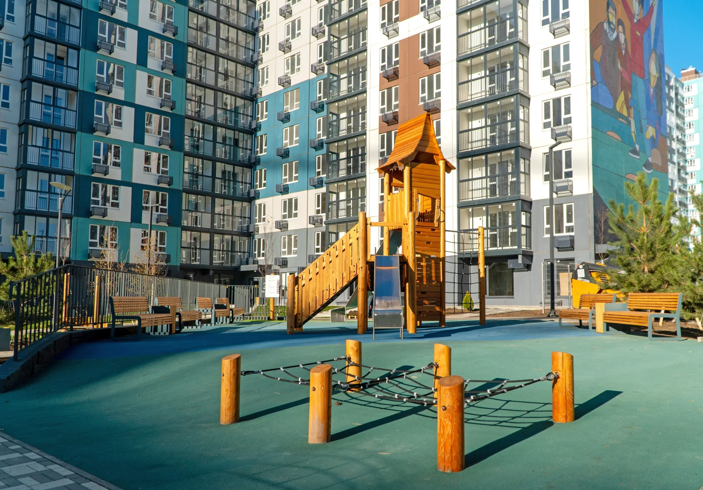
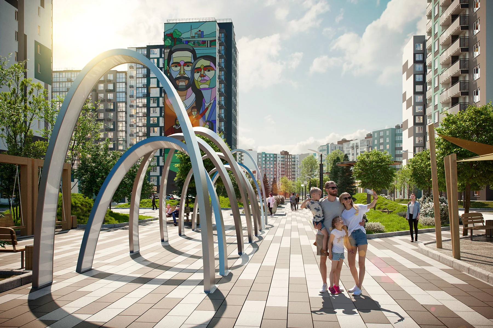

Проверено по официальному источнику
Ростов-на-Дону
5 элемент Аске
от 4 264 311₽Арт-квартал в Левенцовке. Официальная витрина показывает одно- и двухкомнатные квартиры в строящемся доме.
Цена и наличие не являются публичной офертой. Проверено: 13.07.2026.
- Адрес
- Ростов-на-Дону, пр. Солженицына
- Застройщик
- ТЭН девелопмент
- Статус
- Строится; квартиры в продаже
- Срок
- III кв. 2026
- Класс
- комфорт
- Площадь
- 29.5–55.3 м²
Официальные материалы
Галерея проекта
Файлы сохранены локально с официального сайта ЖК или застройщика. Изображения агрегаторов не используются.


Проверка данных
Источник и актуальность
Основные сведения сверены с первичным источником. Для цены, конкретного корпуса, срока передачи ключей и доступности квартиры обязательна повторная проверка перед бронированием.
Официальный источникrostov.ten-stroy.ruОткрыть официальный сайт →Проверено: 13.07.2026
Поможем сравнить проекты
Получить подборкуНужна квартира в новостройке?
Проверим доступность лотов, условия застройщика и документы на дату обращения.